- 1A: Setup and become familiar with the Arduino IDE and the Artemis board
- 1B: Establish communication between computer and the Artemis board through the Bluetooth stack
- 1B: Eestablish a framework for sending data from the Artemis to the computer
Objectives
Lab 1A Tasks
- Blink
- Apollo3 serial
- Apollo3 analogRead
- PDM MicrophoneOutput
- Simplified Electronic Tuner (Graduate lelel)
Blink
The following is a video that showcases the Artemis board flashing its blue LED light:
Video 1: artemis blinking
Apollo3 serial
The following screenshot shows Artemis Echoing back what was sent to it:

Screenshot 1: artemis echoing
Apollo3 analogRead
Firslty we have a screenshot of the Artemis' output from the temperature sensor and a photo of when it was sitting on the bench:

Screenshot 2: artemis temp sensor output while being on bench

Photo 1: artemis at the time of temp sensor output while being on bench
Secondly we have a screenshot of the Artemis' output from the temperature sensor and a photo of when it was being help in hand:

Screenshot 3: artemis temp sensor output when being help

Photo 2: artemis at the time of temp sensor output when being help
We can see that the leftmost measurement went from around 3-4 thousand, while on the bench, all the way up to 20 thousand when being held.
PDM MicrophoneOutput
The following video showcases the difference in output when whistling next to the Artemis board:
Video 2: artemis reacting to sound

Screenshot 4: artemis microphone out ambient sounds of lab

Screenshot 5: artemis microphone out when whistling to it
We can see that the artemis is able of capturing differences in sound frequency.
Simplified Electronic Tuner
To select the three frequencies that the tuner would identify I went to:
https://mixbutton.com/music-tools/frequency-and-pitch/music-note-to-frequency-chart
I selected the ones for the notes A, A# and B for the octave 7 so that the tuner would be able to work properly inside the noisy lab.
The following image is from mixbutton and it shows the frequency-note table:

Table 1: frequency-note table from mixbutton.com
The following video shows artemis' simplified tuner respond to 3500Hz which corresponds to the note A:
Video 3: artemis reacting to 3500Hz
The following video shows artemis' simplified tuner respond to 3500Hz, 3750Hz and 4000Hz which correspond to the octave 7 notes A, A# and B respectively:
Video 4: artemis reacting to octave 7 A, A# and B
Lab 1B Tasks
- Echo
- SEND_THREE_FLOATS
- GET_TIME_MILLIS
- Notification Handler
- Effective Data Transfer
- SEND_TIME_DATA
- GET_TEMP_READINGS
- Disscusion of differences
- Effective Data Rate and Overhead (Graduate level)
- Reliability (Graduate level)
BLE and Codebase
Bluetooth Low Energy (BLE):
As per this summary of Bluetooth Low Energy (or BLE):
- The Artemis board is a radio that acts as a bulletin board, which is also called 'peripheral device', and it posts data for all radios in the community to read.
- Our computer is a radio that acts as a reader, which is also called 'central device', and it reads from any of the bulletin boards (peripheral devices) that have relevant information. Central devices view the services, get the data and then move on.
The peripheral devices can also be thought of as the servers in a client-server transaction, as they have the information that reader-radios ask for. Similarly, central devices are the clients because they read information available from the peripherals.
- The information presented by a peripheral is structured as services, each of which is subdivided into characteristics.
- Services are identified by universally unique IDs, called UUIDs. The ability to define services and characteristics depends on the radio used as well as its firmware. Bluetooth LE peripherals provide services that, in turn, provide characteristics.
Codebase:
Our codebase is the body of code that our system is comprised of.
- Undisrupted communication and BLExCharacteristics (Constructors for handling different type of data provided by ArduinoBLE) transmission is achieved thanks to the UUID and Mac address of the Artemis.
- The code running on the Artemis is
ble_arduino.ino - RobotCommand is a class defined in the synonymous header file. It is used when handling a robot command that the Artemis receives. It is a string of the format:
<cmd_type>:<value1>|<value2>|<value3>|…
- To transmit strings from the Artemis to our computer we use the
EString. enum CommandTypesenumerates the variables in CommandTypes.handle_command()handles commands received by our computer via switch statement to determine what action to take based on the command received.
Lab 1B configurations
After having created the virtual environment FastRobots_ble and sourced it with:
python3 -m pip install --user virtualenv
python3 -m venv FastRobots_ble
source FastRobots_ble/bin/activate
pip install numpy pyyaml colorama nest_asyncio bleak jupyterlab
jupyter lab.
Configured the MAC address of the Artemis and the new generated UUID (generation code shown in screenshot 6 below) in our connection.yaml file in our codebase.
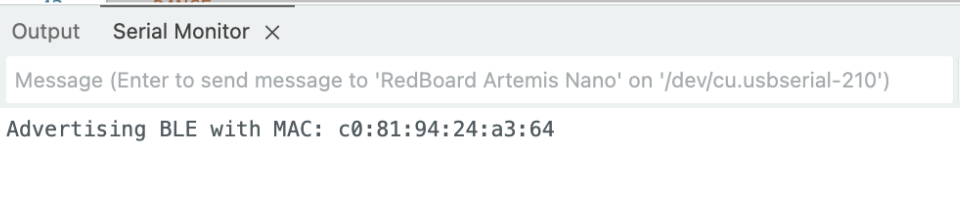
Screenshot 5: MAC address of Artemis
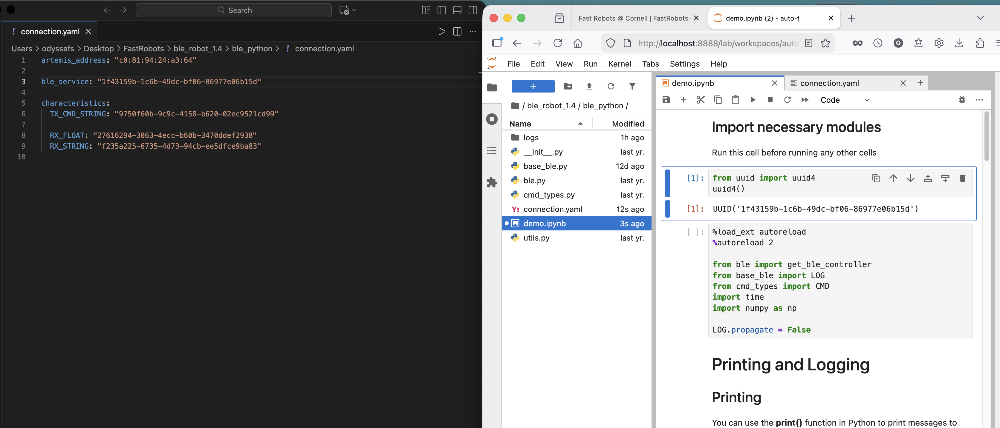
Screenshot 6: left: conection.yaml file, right: command to generate new UUID
Additionally, in the ble_arduino.ino file, the following line was adjusted to reflect the aformentioned uuid:
#define BLE_UUID_TEST_SERVICE "1f43159b-1c6b-49dc-bf06-86977e06b15d"
The following screenshot showcases how to connect to the Artemis via Bluetooth by using the get_ble_controller() constructor and then the method ble.connect(). It also showcases the two example methods .receive_float() and .receive_string():
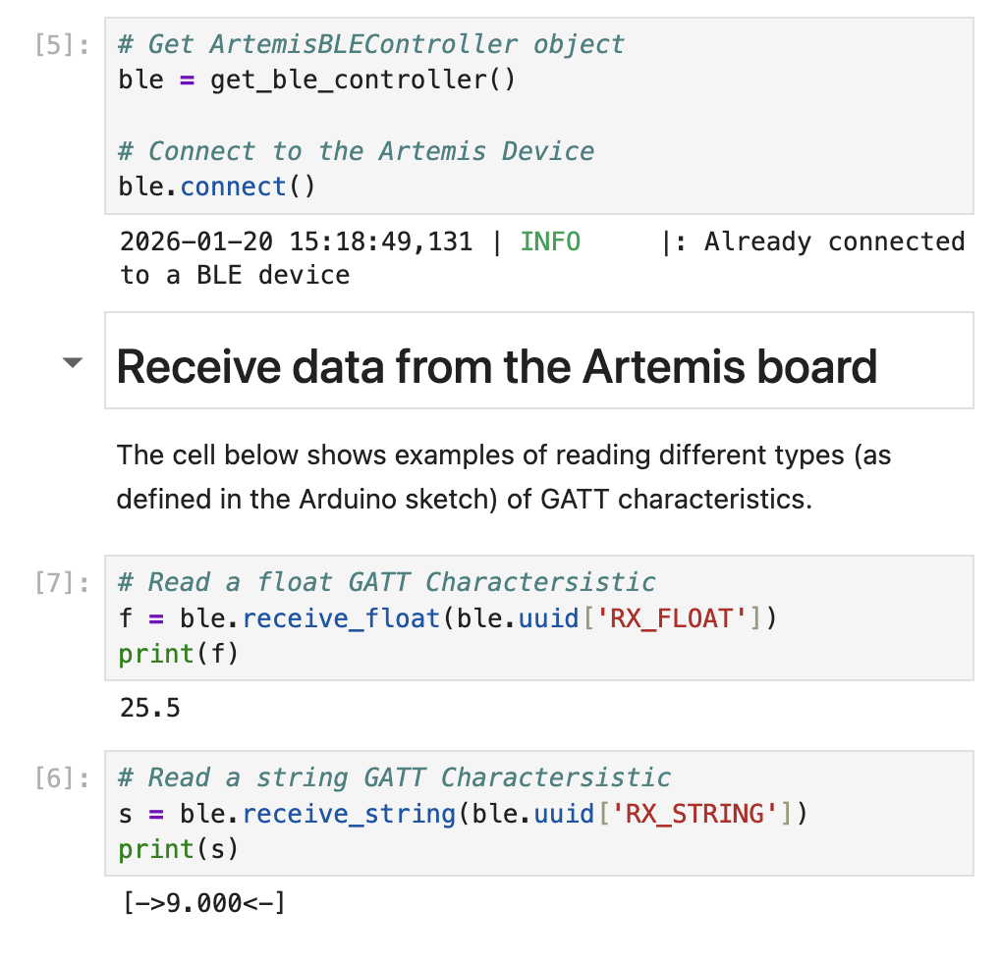
Screenshot 7: Establishment of Bluetooth connection between Artemis and Computer and example methods to read different types of GATT characteristics
Echo
Send a string value from the computer to the Artemis board using the ECHO command. The computer should then receive and print an augmented string.
Artemis Code:
case ECHO:
char char_arr[MAX_MSG_SIZE];
// Extract the next value from the command string as a character array
success = robot_cmd.get_next_value(char_arr);
if (!success)
return;
tx_estring_value.clear();
tx_estring_value.append("Ody's Robot says -> ");
tx_estring_value.append(char_arr);
tx_estring_value.append(" :)");
tx_characteristic_string.writeValue(tx_estring_value.c_str());
Serial.println(tx_estring_value.c_str());
break;
Jupyter Code:
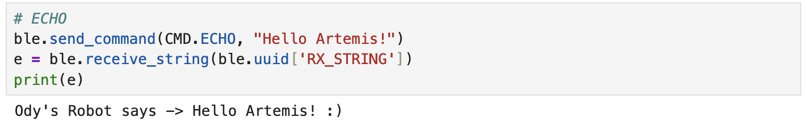
Screenshot 8: juypter code with response
SEND_THREE_FLOATS
Send three floats to the Artemis board using the SEND_THREE_FLOATS command and extract the three float values in the Arduino sketch.
Jupyter Code:
ble.send_command(CMD.SEND_THREE_FLOATS, "2.2|-6.6|1.11")
Artemis Code:
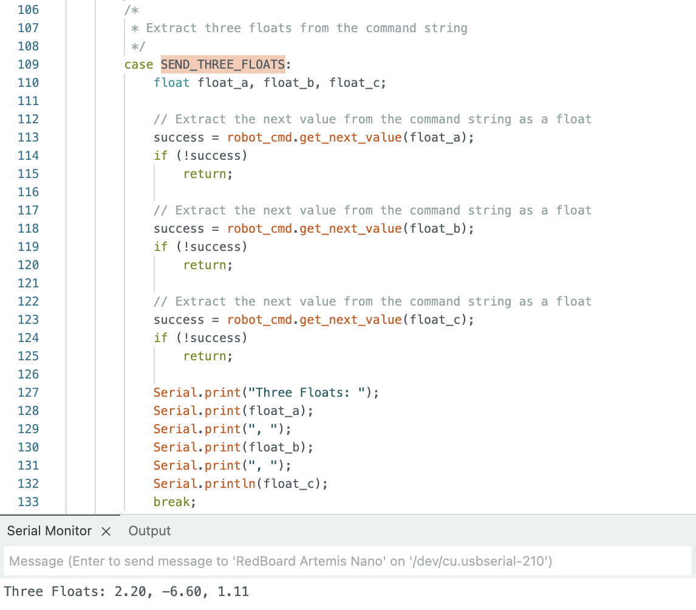
Screenshot 9: Artemis code with response
GET_TIME_MILLIS
Add a command GET_TIME_MILLIS which makes the robot reply write a string such as “T:123456” to the string characteristic.
Artemis Code:
case GET_TIME_MILLIS: tx_estring_value.clear(); tx_estring_value.append("T:"); tx_estring_value.append((int)currentMillis); tx_characteristic_string.writeValue(tx_estring_value.c_str()); break;
Jupyter Code:
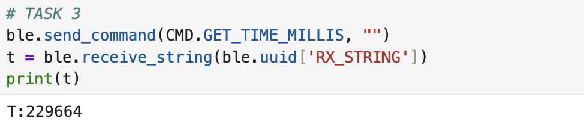
Screenshot 10: Jupyter code with response
Notification Handler
Setup a notification handler in Python to receive the string value from the Artemis board. In the callback function, extract the time from the string.
Jupyter Code:
def notification_handler(uuid, byteArray): string = ble.bytearray_to_string(byteArray) print(string)
Jupyter Code:
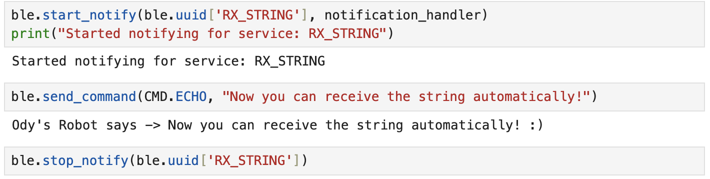
Screenshot 11: General Notification Handler
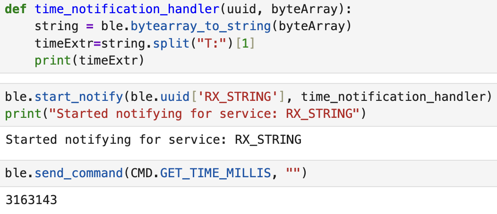
Screenshot 12: Time Extracting Notification Handler
Effective Data Transfer
Write a loop that gets the current time in milliseconds and sends it to your laptop to be received and processed by the notification handler. Collect these values for a few seconds and use the time stamps to determine how fast messages can be sent. What is the effective data transfer rate of this method?
In the following code we can see that the effective data transfer is 34 messages in 2 secconds. Since every message is 9 characters (T:1234567), it's 9 bytes. 17 messages a second equal: 153 bytes / second
Jupyter Code:
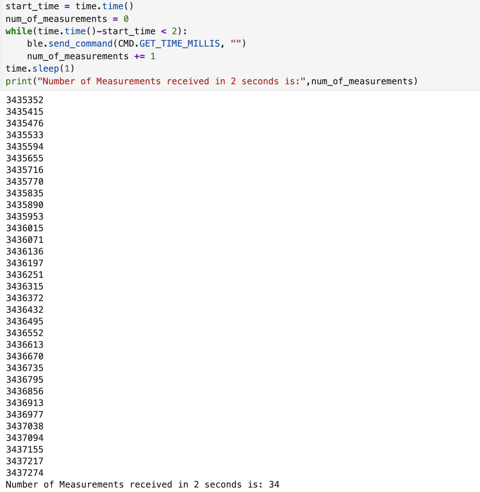
Screenshot 13: Jupyter code with response
SEND_TIME_DATA
Add a command SEND_TIME_DATA which loops an array and sends each data point as a string to your laptop to be processed.
The SET_TIME_DATA case, performs 16 loops where it takes time in milliseconds and stores them in each index of the array timestampArray. Afterwards it clears the Estring, reads each index, appends the content to the Estring, sends it to the computer and repeats for 16 repetitions total.
Artemis Code:
case SEND_TIME_DATA:
int temp_millis;
temp_millis= 0;
if (!success) {
return;
}
for (int i = 0; i < 16; i++){
temp_millis = millis();
timestampArray[i] = temp_millis;
}
for (int j = 0; j < 16; j++){
tx_estring_value.clear();
tx_estring_value.append("T: ");
tx_estring_value.append(timestampArray[j]);
tx_characteristic_string.writeValue(tx_estring_value.c_str());
}
break;
Jupyter Code:
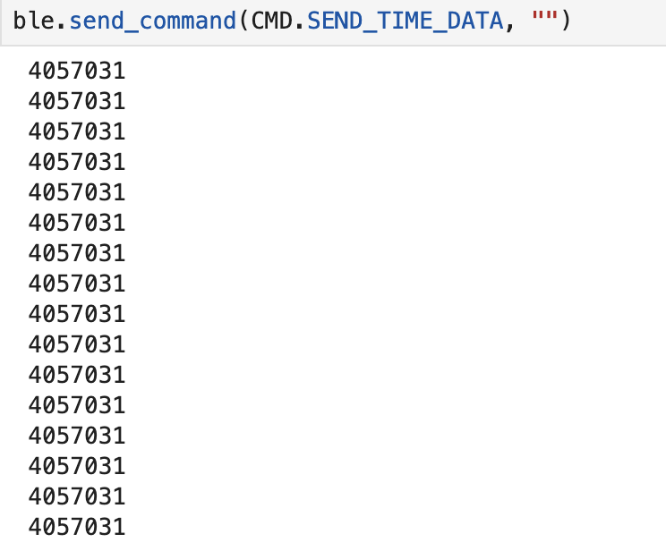
Screenshot 14: Jupyter code with responses
GET_TEMP_READINGS
Add a command GET_TEMP_READINGS that loops through both arrays concurrently and sends each temperature reading with a time stamp. The notification handler should parse these strings and add populate the data into two lists.
The case GET_TEMP_READINGS goes through each index of the timestamp and temperature arrays and adds values into each one. That way, the indexes are paired between the two arrays.
Afterwards, for each index again, the values of the temperature and timestamp array are appended in the appropriate format to the Estring and they are sent to the computer.
Artemis Code:
case GET_TEMP_READINGS:
float temperature;
int temperature_millis;
temp_millis= 0;
if (!success) {
return;
}
for (int i = 0; i < 16; i++){
temperature_millis = millis();
timestampArray[i] = temperature_millis;
temperature = getTemperature();
temperatureArray[i] = temperature;
}
for (int j = 0; j < 16; j++){
tx_estring_value.clear();
tx_estring_value.append("Temp: ");
tx_estring_value.append(temperatureArray[j]);
tx_estring_value.append(" Time: ");
tx_estring_value.append(timestampArray[j]);
tx_characteristic_string.writeValue(tx_estring_value.c_str());
}
break;
Jupyter Code:
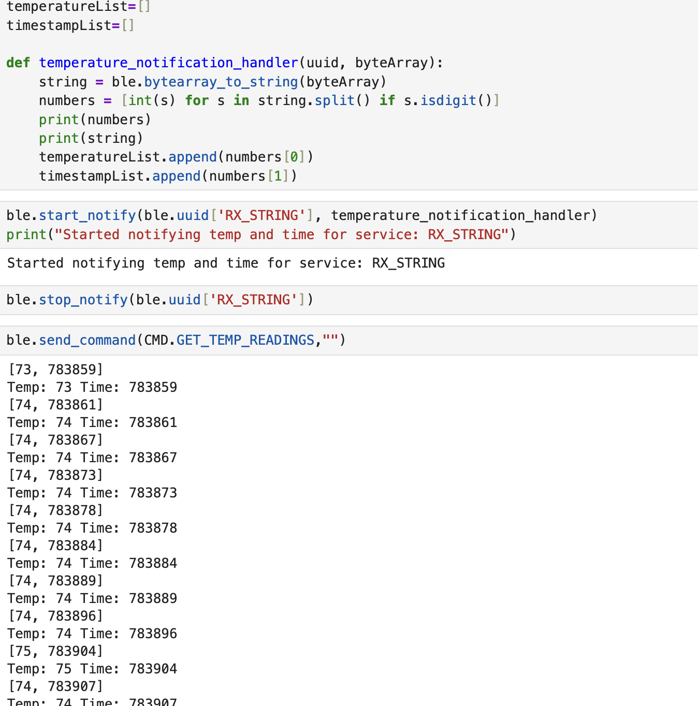
Screenshot 15: Jupyter code with responses
Discussion of differences
Based on the output of GET_TIME_MILLIS, comparing it to that of SEND_TIME_DATA and
GET_TEMP_READINGS we can immediately see that the latter 2 are much faster in terms of sampling.
In those cases, the artemis immediately sends a whole batch of data with only one command being sent to it from the computer. This meanas that it can record a lot of data points quickkly and send them all together at the end.
The negative side of that, however, is that the computer has to wait for the artemis to complete
the collection of all data points before receiving even the first one. As always, there are tradeoffs.
If we want faster sampling times but don't care as much about the delivery time, we'd go with the second method.
If we wanted as "real-time" data as possible to be transmitted live, we'd go with the first option
which samples more slowly.
Modifying the code like so, allows the determination of second method's data recording speed:
for (int i = 0; i < 100; i++){
temp_millis = millis();
timestampArray[i] = temp_millis;
}
tx_estring_value.clear();
tx_estring_value.append("T1: ");
tx_estring_value.append(timestampArray[0]);
tx_estring_value.append(" T2: ");
tx_estring_value.append(timestampArray[99]);
tx_characteristic_string.writeValue(tx_estring_value.c_str());
In the following screenshot we can see the difference between the first and one hundredth recording to be 2ms.
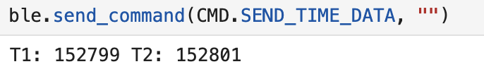
Screenshot 16: Jupyter code with response
The amount of data we can store to send without running out of memory depends on the program's variables and the type of data we want. ASSUMING one data point is 7 characters (like GET_TIME_MILLIS without the T: part) which is equal to 7 bytes, that would mean that we could approximately send 384k/7 ~= 54,000 data points (not counting the memory the program takes up).
Effective Data Rate and Overhead
Send a message from the computer and receive a reply from the Artemis board. Note the respective times for each event, calculate the data rate for 5-byte replies and 120-byte replies. Do many short packets introduce a lot of overhead? Do larger replies help to reduce overhead?
In the beginning, I wanted to see how long it takes for Artemis to send a 5 Byte and 120 Byte Estring to the computer. So I created the following two cases to see the time it takes for the message to get sent:
Through these, I learned that the time it takes to send 5 Bytes and 120 Bytes of data is 133 and 224 miscroseconds respectively.
case GET_DATA_SPEED_5B:
tx_estring_value.clear();
tx_estring_value.append("ccccc");
before_micros = micros();
tx_characteristic_string.writeValue(tx_estring_value.c_str());
after_micros = micros();
total_micros = after_micros - before_micros;
tx_estring_value.clear();
tx_estring_value.append("The time it took to send 5 bytes is: ");
tx_estring_value.append((int)total_micros);
tx_estring_value.append(" microseconds.");
tx_characteristic_string.writeValue(tx_estring_value.c_str());
break;
case GET_DATA_SPEED_120B:
tx_estring_value.clear();
tx_estring_value.append("cccccccccccccccccccccccccccccccccccccccccccccccccccccccccccccccccccccccccccccccccccccccccccccccccccccccccccccccccccccccc");
before_micros = micros();
tx_characteristic_string.writeValue(tx_estring_value.c_str());
after_micros = micros();
total_micros = after_micros - before_micros;
tx_estring_value.clear();
tx_estring_value.append("The time it took to send 120 bytes is: ");
tx_estring_value.append((int)total_micros);
tx_estring_value.append(" microseconds.");
tx_characteristic_string.writeValue(tx_estring_value.c_str());
break;
To calculate the round-trip I make the following case which allows to send a number of messages back to back with a set sizeL
case GET_BYTE_SPEED:
int bytes;
int num_of_packets;
// Extract the next value from the command string as an integer
success = robot_cmd.get_next_value(bytes);
if (!success)
return;
// Extract the next value from the command string as an integer
success = robot_cmd.get_next_value(num_of_packets);
if (!success)
return;
tx_estring_value.clear();
for (int i = 0; i < bytes; i++) {
responseArray[i] = 'c';
}
for(int j=0; j < num_of_packets; j++){
tx_estring_value.append(responseArray);
tx_characteristic_string.writeValue(tx_estring_value.c_str());
tx_estring_value.clear();
}
break;
I also created the following Notification Handler:
start = 0
dt = 0
def data_notification_handler(uuid, byteArray):
string = ble.bytearray_to_string(byteArray)
end = time.time()
dt = end-start
#print(string)
print(dt)
Then, I ran the GET_BYTE_SPEED command 10 times for the following sizes: 5,10,20,40,60,80,100,120 and took the average round-trip time as well as data rate. The results are plotted below:
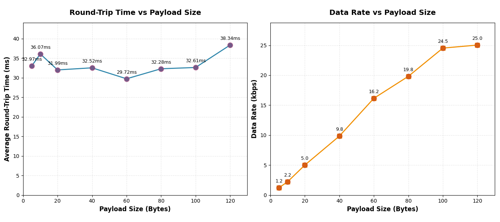
Plots 1,2
These results tell us that the latency remained relatively the same in all of the cases, which meant that the bigger sized messages had a much greater data rate. This means that many short packets do introduce a lot of overhead and larger replied help to reduce it.
Reliability
What happens when you send data at a higher rate from the robot to the computer? Does the computer read all the data published (without missing anything) from the Artemis board?
To test this out I made the following notification handler:
received_strings = []
def rapid_data_notification_handler(uuid, byteArray):
string = ble.bytearray_to_string(byteArray)
received_strings.append(string)
In addition to this, I also made a new case for the Artemis that would rapidly send 100 Estrings to the computer:
case GET_RAPID_INFO:
tx_estring_value.clear();
for(int i=0;i < 100;i++){
tx_estring_value.append(i);
tx_characteristic_string.writeValue(tx_estring_value.c_str());
tx_estring_value.clear();
}
break;From the following screenshot, we can clearly see that no messages were lost, even though there was a delay in receiving them. This indicates that there is some sort of Queue inside of the notification handler that just pops the oldest element at its faster speed.
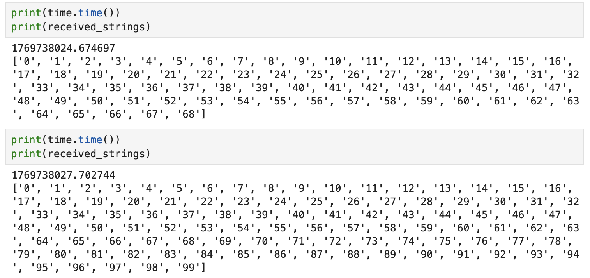
Screenshot 17: All messages arrived to computer
Discussion
Lab 1 successfully established the hardware and software foundation for the Fast Robots labs. The Bluetooth communication protocol is now functional and ready for extension in subsequent labs.
What challenged me the most was figuring out how to minimize the round-trip time for the Effective Data Rate and Overhead part.
I really like the incorporation of the "truest" time difference that I measured, which was the time it took the Artemis (and only the Artemis) to send the 5B vs 120B messages.
Collaboration
I used Kimi to build the basic template for the website and I referred to Lucca Correia's Website for how to structure this lab report. I also looked at Aidan McNay's and Ben Liao's websites to see how I should upload the graduate level answers.